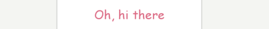

디자이너를 위한 Fuse
직접 app을 만드는 법을 배워봅시다.
여기에서 모든 부분을 읽을 필요는 없습니다; Fuse를 배우기 위해 가장 좋은 방법은 직접 써보는 것입니다. 훑어보고 막히는 부분이 있을 때 해당 섹션을 다시 살펴보십시오.
Fuse 상자 안에는 무엇이 있습니까?
Fuse를 다운로드하고 설치하면 몇 가지를 볼 수 있습니다:
-
대시보드:
Fuse를 실핸하면 보이는 부분입니다. 여기서부터 프로젝트를 생성하거나 관리합니다. 또한 Fuse 계정으로 로그인할 수 있고, 프로페셔널 플랜을 구입한 경우에는 Fuse Studio를 사용할 수가 있습니다.
-
실시간 앱 미리보기(프리뷰):
Fuse 프로젝트를 실행하면, Fuse 프로그램에서 모바일 앱이 실시간 앱 미리보기 모드로 실행됩니다. 실시간 미리보기를 통해 앱 인터렉션을 직접 다루거나 시각적으로 개체를 선택할 수 있습니다. 미리보기 화면에서 대상 개체 항목을 클릭하고
⌥ ⌘ L/alt ctrl L키를 누르면 텍스트 편집기로 이동합니다.
-
장치에서 미리보기:
QR 코드를 사용하여 Preview app을 실행할 수 있습니다. Google Play에서 안드로이드 앱 또는 Apple App Store에서 iOS 앱 을 다운로드하여 QR 코드를 인식하면 됩니다. 다른 방법으로는 부가적인 단계를 필요로 합니다. 모바일 디바이스에서 실제 네이티브 앱을 직접 빌드하여 실행시키기 위해서는 적절한 Android 및 iOS SDK를 필요로 합니다. 자세한 방법은 여기 에 설명되어 있습니다.
Fuse에 포함되지 않은 부분은 다음과 같습니다:
-
텍스트 편집기:
텍스트 편집기는 코드를 작성하거나 편집하도록 도와주는 응용프로그램입니다. 많은 훌륭한 제품이 이미 있습니다. 현재, Fuse는 Atom, Sublime Text 및 Visual Studio Code에 대한 플러그인을 가지고 있습니다. 디자이너는 Sublime Text를, 개발 활동에 관심이 많은 디자이너는 Visual Studio Code를 다운로드하는 것을 권장합니다. Visual Studio Code에는 JS 디버깅 기능까지 내장되어 있으니 참고하여 적절한 편집기를 선택하십시오.
-
Fuse 스튜디오:
Fuse 앱을 생성 및 편집하는 시각화 도구인 Fuse Studio에 대한 스크린샷/비디오를 보았을 것입니다. 이는 Fuse 프로페셔널 플랜에 포함됩니다. 그러나 걱정하지는 마십시오. 무료 버전으로도 모든 것을 할 수 있으며, Studio는 동일한 워크플로우를 향상시켜줍니다.
Fuse 프로젝트란 무엇입니까?
Fuse 프로젝트는 MainView.ux 및 AppName.unoproj 두 파일을 포함하는 단순한 폴더일 뿐입니다
Fuse를 열고 대시보드에서 New Fuse project (새 Fuse 프로젝트)를 선택하면, 다음과 같은 폴더를 생성할 것입니다:
-
AppName.unoproj은 보다 심화된 기능을 위해 사용하지만, Fuse에게 프로젝트가 어떻게 구성되어 있는지를 알려주는 역할을 합니다. 프로젝트에 새로운 파일 및 폴더를 추가하는 경우, 이 파일을 기준으로 상대 경로를 사용합니다. -
MainView.ux는 여러분 앱에 나타나는 시각적인 모든 부분을 포함합니다. 텍스트 편집기에서 이것을 달면 다음 앱 태그를 볼 수 있을 것입니다:<App><App/>. 이 태그 안에 넣는 내용들은 여러분 앱에서 UI를 구성할 것입니다. 지금은 상상해 보면 전체 앱을 여기에 만든다고 한다면 그 양이 매우 많아 보입니다. Fuse는 모듈화하도록 구성 또한 가능하도록 디자인되었기에, 엄청난 양이 한 파일에 들어가지 않도록 구성할 수 있습니다. 이 부분에 대해 관심이 있다면, 클래스 섹션 부분을 살펴봅니다. -
Fuse에서 앱을 실행 한 다음에는
build폴더가 보일 것입니다. 여기에는 앱에 대한 미리보기를 위해 사용하는 내부 파일들을 포함합니다. 대부분 이 부분은 신경쓰지 않아도 됩니다. Fuse로 만든 현재 앱을 다른 사용자에게 공유하고 싶을 때에는 이 폴더를 지워서 용량을 절약하는 것이 좋습니다.
이외에 다른 마법과 같은 부분은 없습니다. 일반적인 폴더와 같습니다. 하위에 폴더를 만들 수도 있고, Git을 사용하여 버전 관리도 사용할 수 있습니다. 압축하여 친구에게 공유하여 실행하도록 할 수도 있습니다.
워크플로우
Fuse로 작업하는 가장 좋은 방법음 무엇일까요? 답은 물론, 경우에 따라 다르다일 것입니다.
UX에서 코딩을 하기에 매우 익숙하고 만들고자 하는 아이디어가 명확하다면, Fuse에 바로 뛰어드는 것이 아마도 최선의 방법일 것입니다. 현재는 여러분이 아직 만들어야 할 것을 정확히 알지 못하고 있을 가능성이 더 큽니다. Sketch, Figma 또는 Photoshop과 같은 디자인 도구를 사용하면 아이디어를 빠르고 대략적으로 살펴볼 수 있습니다. 이러한 프로그램에서 세부적인 부분을 완성시키는 데 시간을 낭비하지는 마십시오. 앱이 어떻게 보이고 동작해야하는지는 알게된 다음에는 Fuse에서 해당 부분을 만드는 작업을 시작하고 다듬어 완성시킬 수 있습니다.
그렇다면 현재 단계에서 일단 Fuse를 사용하는 가장 좋은 방법은 무엇입니까? 아이디어를 확실하게 하면서는 여러분이 올바르게 하지 않고 있다고 생각이 들 수도 있습니다. 어쩌면 몇몇 UX 코드는 중복이 되었거나 더 나은 방법이 있을 것이라고 보일 수도 있겠지만, 이들을 다루기에는 지금은 복잡해 보이는 상황입니다.
괜찮습니다.
아이디어를 페이지에 표현한 다음, UX를 제거하거나 다듬는 리팩토링 작업을 나중에 해도 괜찮습니다. 이러한 유연성으로 인해 프로토타이핑 단계에서 Fuse로 디자인을 하면 너무 재미있고 매우 효과적입니다. 나중에 정리할 부분이 많을 수도 있기에 지금 너무 흥분하지는 마십시오.
UX 마크업
.ux 는 해당 파일이 UX 마크업을 포함한다는 것을 의미합니다. UX 마크업이란 UI를 보다 쉽게 만들기 위한 XML 언어입니다.
웹에 대한 경험이 있다면, XML 언어에 대한 구조를 쉽게 파알할 수 있을 것입니다. 그러나 그렇지 않다면 간단한 설명이 필요할 것입니다.

< > 안에서 선선을 하는 개체로 구성이 이루어집니다. 프로그램을 디자인하는 계층으로 간주하고자 하는 생각이 들 것입니다. 그러나, 상자 안의 상자와 같이 간주하는 것을 적극 권장합니다. 마치 러시안 인형과 같은 관계라 할 수 있습니다. 상자를 열어, 안에 작업을 한 후, 상자를 닫는 것입니다.
< 바로 다음에 처음 나오는 단어는 어떤 유형의 개체로 Fuse에서 사용할 지를 이야기합니다. 대부분 개체 이름은 대문자로 시작합니다.
해당 개체들은 다양한 속성들을 가지고 있습니다. 어떤 속성을 설정할 것인지는 개체 유형에 따라 달라집니다.
해당 속성을 지정하여 어떻게 개체가 보여야 하는지를 Fuse에게 알려줍니다. 몇몇 속성들은 표현 가능한 값에 대한 목록 중에서 선택을 해야 하고, 또 다른 속성들은 숫자 또는 텍스트를 값으로 가집니다.
/ 는 요소에 대한 끝 부분임을 강조해 쥡니다. 마지막 > 이전에 있는 / 를 통해 Rectangle 태그가 닫힌다는 것을 의미합니다.
개체들은 열린 상태로 둔 아래와 같이 다른 개체를 포함한 다음에 닫을 수도 있습니다:
<Rectangle Color=“Red”>
<Text Value=“Hey, I am some text” Color=“White” Alignment=“Center”/>`
</Rectangle>
첫 <Rectangle> 에는 / 가 없지만 두 번째 Rectangle 부분에서 </ 로 시작하는 점을 발견하셨습니까? 이를 통해 부모와 자식 과 같은 개체 관계를 만들어 냅니다.
이와 같이 하는 것을 보통 둘러싼다고 (wrapping) 이야기합니다. Rectangle 태그는 Text 개체를 둘러싸고 있습니다.
이렇게 자식에 대해 하위 구조를 무한정 계속하여 가져갈 수도 있습니다. 개체에 대한 이러한 관계를 중요한데, 왜냐하면 부모 태그를 기반으로 어떻게 동작하는지를 설명해 줄 수 있기 때문입니다. Fuse는 이러한 레이아웃 시스템을 사용하여, 개체를 위치시키거나 정렬합니다.
왜 이것이 좋습니까?
이러한 언어를 사용하여 UI를 만드는 것은 아주 많은 장점을 가져다줍니다.
-
무엇보다도, 읽기가 쉽습니다. 여러분의 앱은 본질적으로 볼 때에는 일련의 개체들 (사각형, 패널, 텍스트) 들이 특정한 구조에 기반하여 배열된 것입니다. 개체에 대한 부모 자식 관계를 통해 쉽게 이해하고 변경할 수 있습니다.
-
두 번째로, 생각하는 부분을 분리시켜 살펴볼 수 있습니다.
.ux파일을 사용하여 UI를 만들고, 구체적인 비즈니스 로직을 완벽하게 분리시켜 생각할 수가 있는 것입니다. 물론, 이 UI에 비즈니스 로직을 쉽게 연결할 수가 있으며, 이 때 UI는 비즈니스 로직에 의존하지 않습니다. 이를 통해 UI 작업을 반복하는데 있어 매우 빠르고 단순하게 가능한 것입니다. -
마지막으로는, 선언적 이라는 특징입니다. Fuse에게 어떻게 만드는지가 아닌 무엇을 원하는지를 여러분이 알려준다는 것을 이야기합니다. 선언적 언어에 대한 장점은 UI에 대한 상태에 대해 걱정할 필요가 없다는 것입니다. 상태에 대한 개념은 고급 프로그래밍 개념에 가깝지만 이를 UX와 함께 관리하는 것이 고통스러우며, 여러분이 이러한 부분을 할 필요는 없는 것입니다.
패널 (Panel) 기초
Fuse에서 가장 하고 싶어하는 대부분이 다음 패널을 결합하는 것으로 이루어지기 때문에, 이를 이해하는 것은 시작함에 있어 가장 훌륭한 방법입니다.
<Panel/>모든 개체에 있어 가장 기초가 되는 것입니다. 본질적으로는 비어있는 상태입니다. html에서
div와 매우 유사합니다.
<Page/>기본적으로
Panel과 같지만 제목을 포함합니다. Page 태그를 통해 모바일 앱 내비게이션을 만들고자 할 때 유용합니다.
<Rectangle/>사각형 (Rectangle)은
Panel과 결국 같으나 모양을 표시할 수 있는Corner Radius (코너 반지름)과 같은Shape (모양)속성이 함께 있습니다.
<Circle/>단지 circle (원)에 해당하지만,
Rectangle (사각형)처럼Shape (모양)과 관련된 속성을 포함합니다.
<StackPanel/>한 요소 다음에 또 다른 요소가 붙어있는 레이아웃에서 자식 요소들을 정렬합니다.
<Text/>텍스트 개체에 대한 공장과 같은 역할로 실행이 이루어집니다.
<TextInput/>사용자가 편집이 가능한 텍스트 필드를 만듭니다.

<ScrollView/>사용자가 자식 요소들을 스크롤할 수 있도록 해 줍니다.
<Each/>지정한 개수 또는 데이터를 기반으로 하여 반복이 이루어집니다. 매우 강력합니다.
Layout
Fuse에서 사용하는 레이아웃 시스템은 상대 레이아웃입니다. 웹에 대한 경험이 있는 경우에는 매우 친숙할 것이지만, Sketch와 같은 프로그램을 사용한 적이 있는 경우에는, 간단한 소개를 필요로 할 것입니다.
대부분의 벡터 기반 도구들은 절대 좌표 시스템을 사용합니다. 절대 좌표계에서 사각형을 그린다면 아트보드에서 해당 사각형에 대한 x 및 y 좌표를 지정하는 식입니다. 아트보드 크기를 변경한다면, 사각형은 정확히 같은 x 및 y 포인트를 가진 상태로 있을 것입니다. 참고: 몇몇 디자인 프로그램들은 이미 상대 레이아웃 특징을 가지고 있습니다. 예를 들면, Figma 컨테이너 및 Sketch에 있는 리사이징 규칙이 이에 해당합니다.
Fuse 레이아웃 시스템에서, 사각형을 그리는 경우에는, 여러분은 부모 요소를 기준으로 어떻게 상대적으로 정렬이 이루어지는지를 이야기합니다. 따라서 부모 요소 크기가 변경되는 경우, 사각형은 부모를 기준으로 위치가 변경될 것입니다. 다소 복잡해보이지만, 실제 예제를 한 번 같이 살펴봅시다:
<!-- 빨강 패널 -->
<Panel Color="#DB6882" Width="200" Padding="20" Height="300">
<!-- 노랑 패널 -->
<Panel Color="#F1D751" />
</Panel>
부모 <Panel/> 에서 Width (너비) 속성을 변경하면, 자식 요소 크기가 어떤 식으로 정확히 바뀌는 것을 볼 수 있을 것입니다. 자식 요소는 부모 요소가 가져다 준 공간을 최대한 사용하여 화면에 나타납니다.
또한 부모 개체를 통해 자식 요소를 어떻게 정렬할 것인지를 지시하는 기능도 있습니다. <StackPanel/> 이 좋은 예시에 해당합니다. StackPanel 자식 요소들은 동일한 공간을 점유하려고 하는 것이 아닌, 한 요소 다음에 한 요소 식으로 차곡차곡 채워집니다. 다음 예제를 살펴봅시다:
<!-- 빨강 패널 -->
<StackPanel Color="#DB6882" Width="300" Height="300" Padding="20">
<!-- 노랑 패널 -->
<Panel Color="#F1D751" Height="40" />
<!-- 연파랑 패널 -->
<Panel Color="#6DBFD2" Height="60" />
<!-- 보라색 패널 -->
<Panel Color="#7A49A7" Height="80" />
</StackPanel>
<StackPanel/> 대신 보통 <Panel/> 을 사용하였다면, 모든 자식 요소들은 서로 겹친 상태로 다음과 같이 나타날 것입니다:
처음에는, 이러한 방식으로 위치를 지정하는 것이 실망스러울 수도 있을 것입니다. 그러나 익숙해지면 매우 강력합니다. 레이아웃이 임의의 화면 크기에 맞추어지므로, 더 이상 장치 해상도 및 표현이 이루어지는 픽셀 밀도 (density)가 장치에 따라 약간 달라지는 상황을 걱정하지 않아도 됩니다.
Margin (여백) 및 Padding (패딩)
위 코드에서 부모 개체에서 보면 Padding 속성을 설정한 것을 볼 수 있을 것입니다. Margin 및 Padding 은 상대 레이아웃 시스템에서 마치 빵과 버터같다고 볼 수 있습니다. 따라서, 이러한 차이점을 우리가 이해하고 있는지를 확인해 보겠습니다.
간단히 말해, Margin 은 개체 바깥 부분에 해당하는 영역이고, Padding 은 개체 내부에 해당하는 영역입니다. 개체에 Margin 을 설정하면 개체와 부모 사이에 공간을 만들어냅니다. Padding 을 설정하면 개체와 포함하고 있는 자식 사이에 공간을 만들어냅니다. 짧은 데모를 살펴보겠습니다:
<!-- 빨강 패널 -->
<Panel Color="#DB6882" Width="300" Height="300">
<!-- 노랑 패널 -->
<Panel Color="#F1D751" Margin="20" Padding="40">
<!-- 연파랑 패널 -->
<Panel Color="#6DBFD2" />
</Panel>
</Panel>
노랑 Panel 을 살펴보십시오. 빨강 Panel 영역에서 ‘밀어내고’ 있기에 떨어져 있는 상태로 보이는 것을 발견하셨습니까? 이것이 Margin 이 동작하는 방식입니다. 연파랑 Panel 은 결국 노랑 Panel 영역에서 밀어내져 있는 상태로 보입니다. 이것이 Padding 이 하는 역할입니다. 아래 다이어그램이 이해를 보다 도와줄 것입니다:
또한 각 면에 대해 서로 다른 값을 아래와 같이 줄 수도 있습니다:
<!-- 빨강 패널 -->
<Panel Color="#DB6882" Width="300" Height="300">
<!-- 노랑 패널 -->
<Panel Color="#F1D751" Margin="40,30,20,10" />
</Panel>
이번에는 Margin 속성에 4개의 값이 있고, 각 값은 콤마로 구분이 이루어졌습니다: Margin=”40,30,20,10". 이는 다음과 같이 이야기하는 것과 동일합니다:
Margin-Left="40"
Margin-Top="30"
Margin-Right="20"
Margin-Bottom="10"
Fuse는 Margin 과 Padding 을 서로 다른 유형으로 지정하지 않고, 하나의 값으로 한 번에 지정합니다. 값이 Left부터 시작하여 시계 방향으로 이동한다는 것을 기억하면 편리합니다: Left (좌),Top (상), Right (우), Bottom (하).
여백 및 패딩을 Margin=”40,20" 와 같이 사용할 수도 있습니다. 이는 다음과 같이 이야기하는 것과 동일합니다:
Margin-Left-and-Right="40"
Margin-Top-and-Bottom="20"
정렬 (Alignment)
Alignment (정렬)은 레이아웃을 미세하게 조정하는 것을 정말로 가능하게 해 줍니다. 이미 추측하였듯이, Alignment 를 지정하여 개체가 부모를 기준으로 하여 어디에 정렬이 이루어져야 하는지를 기술하는 것입니다. 가장 중요한 것은 개체가 사용할 수 있도록 가지고 있는 공간을 기준으로 하여서만 정렬이 이루어진다는 것입니다. 이것은 당연한 것처럼 들리지만 StackPanels 및 사용 가능한 가용 공간을 제한하는 다른 요소 내부에서 Alignment 를 사용하면 문제가 발생할 수도 있습니다. 먼저, Alignment 가 가지고 있는 옵션들을 살펴봅시다:
대부분의 경우, Alignment 는 정말 직관적입니다. 주석에 쓰여져 있는 것과 동일합니다. 그러나 때때로는 기대했던대로 정렬이 이루어지지 않는데, 이 때 대부분은 가용 공간 이라는 것 때문에 발생합니다. 다음을 살펴봅시다:
<!-- 빨강 패널 -->
<StackPanel Color="#DB6882" Width="300" Height="300" Padding="20">
<!-- 노랑 패널 -->
<Panel Color="#F1D751" Height="100" />
<!-- 보라 패널 -->
<Panel Color="#7A49A7" Height="100" />
</StackPanel>
여기에 StackPanel 안에 두 개의 Panel 이 있습니다. 보라색 Panel 을 StackPanel 의 맨 아래에 정렬시키고 싶다면 어떻게 할까요? StackPanel 에 많은 여백 공간이 있다는 것을 볼 수 있습니다, (아래로 정렬하여도) 문제되지 않을 것 같습니다.
<!-- 빨강 패널 -->
<StackPanel Color="#DB6882" Width="300" Height="300" Padding="20">
<!-- 노랑 패널 -->
<Panel Color="#F1D751" Height="100" />
<!-- 보라 패널 -->
<Panel Color="#7A49A7" Height="100" Alignment="Bottom" />
</StackPanel>
그러나 아무것도 바뀌지 않습니다. 왜 그럴까요?
대부분 개체들은 사용할 수 있는 공간을 기준으로 가장 많이 가져가고자 하는데, StackPanel 에서 미묘한 점 하나가 있다면 자식 요소들이 필요로 하는 만큼만 공간을 주고 있다는 것입니다. 따라서 보라색 Panel 은 해당 크기와 같은 공간만 사용이 가능한 것입니다. 혼란스러운지요? 아래를 살펴보십시오:
우리는 보라색 Panel 이 모든 자식 요소에 대해 제공된 공간 중에서 아래 부분에 정렬이 되기를 기대하였습니다. 대신 보라색 Panel 은 자신을 위해 제공된 공간을 기준으로 하여 맨 아래에 정렬이 됩니다. 시각적으로 볼 때, 그 위치가 전혀 바뀌지 않습니다. 이 경우, 수정 가능한 방향으로는 사용 가능한 공간을 나누지 않는 다른 종류의 Panel 을 사용한 것일 수 있습니다. 따라서 만약 Alignment 가 기대한대로 동작하지 않는 상황을 겪는다면, 공간이 여러분 앱에 어떻게 할당이 이루어지고 있는지를 생각해 보십시오.
마지막으로, 개체에 Alignment 를 설정하면 개체가 공간을 차지하는 방식에 또 다른 영향을 가져다 줍니다. 위에서 “개체가 사용할 수 있도록 가지고 있는 공간을 기준으로 하여서만 정렬이 이루어진다” 라고 언급하였는데, 이는 우리가 Alignment 을 설정하기 전까지는 참입니다. 다음 코드를 살펴봅시다:
<!-- 빨강 패널 -->
<Panel Color="#DB6882" Width="300" Height="300" Padding="20">
<!-- 노랑 배경과 함께 텍스트 -->
<Text Value="Hey there" Color="Black" Background="#F1D751" />
</Panel>
Panel 안에 간단한 Text 가 있는 상황입니다. Text 에 대한 Background (배경) 속성을 노랑으로 설정하여 얼마나 많은 공간을 해당 텍스트 요소가 가져오는지를 쉽게 볼 수 있을 것입니다. 이야기하였듯이, 사용 가능한 공간 전체를 채웁니다. 이제, Text 에 Alignment 속성을 추가하여 어떻게 바뀌는지를 살펴봅시다:
<!-- 빨강 패널 -->
<Panel Color="#DB6882" Width="300" Height="300" Padding="20">
<!-- 노랑 배경과 함께 텍스트 -->
<Text Value="Hey there" Color="Black" Background="#F1D751"
Alignment="TopCenter" />
</Panel>

두 가지 현상이 발생하였습니다. Text 가 사용 가능한 공간에서 TopCenter 로 이동하였고, 텍스트에 대한 Value (값)을 출력하는데 필요로 하는 공간 만큼만 점유도록 바뀌었습니다. Alignment 를 개체에 설정한다는 것은 마치 “구석에 앉은 다음에 많은 공간을 차지하지 마십시오.” 라고 이야기하는 것과 같습니다. 처음 레이아웃을 시작할 때에는 예기치 않은 결과가 발생할 수 있으므로, 이 부분에 대해 자세히 이해하는 데 있어 시간을 할애할 만한 가치는 있습니다.
단위 (Units)
단위에 대해서는 간단히 설명하고자 합니다. 의심의 여지 없이 코드에 단위를 지정할 필요가 없다는 것을 알아차릴 수 있을 것입니다. 왜냐하면 Fuse에서는 points (포인트)를 디폴트 단위로 사용하기 때문입니다. Point 는 여러 화면 밀도에 걸쳐 일관성을 보장합니다. 몇몇 다른 옵션 또한 있습니다. Width, Height, X, 그리고 Y 와 같은 속성들은 모두 percent (퍼센트) 및 pixel (픽셀)로도 지정할 수도 있습니다:
-
퍼센트 —
Width="50%"은 부모 너비에서 50%만큼 너비를 만들어냅니다. -
포인트 (디폴트) —
Width="50"는 개체에 대한Width를 50 포인트로 만듭니다. 이는 너비가 모든 화면 해당소에서 동일하게 보여진다는 것을 의미합니다. -
픽셀 —
Width="50px"은Width를 정확히 50 픽셀로 설정합니다. 이는 높은 픽셀 밀도를 가진 화면에서는 보다 작게 보여진다는 것을 의미합니다.
스타일 적용
Fuse에서 스타일 적용은 매우 단순하고 직관적입니다.
Fuse에서 스타일 적용은 벡터 기반 프로그램과 매우 유사한 방식으로 동작합니다. 각 개체에는 개체에 지정한 Color 와 같은 스타일 적용 속성이 있습니다. 이는 개체가 규칙으로부터 스타일을 상속하는 CSS와는 다릅니다.
<Rectangle Color="#46E3D6" Width="200" Height="100"/>
Rectangle 과 Circle 같은 모양 개체는 전형적인 Panel보다 몇 가지 스타일 관련 속성이 더 있습니다. 예를 들어, Rectangle 은 Stroke 와 CornerRadius 를 가질 수 있는 반면, Panel 은 가질 수 없습니다. Shape 개체는 일반적으로 레이아웃은 보이지 않은 Panel 로 레이아웃을 구성하는 데에서 시각적인 역할을 하여 화면에 보여집니다.
정말 흥미로운 점은 스타일을 자체 개체를 가지는 상태로 하여 만들 수 있다는 것입니다.
<Rectangle Width="200" Height="100">
<SolidColor Color="#46E3D6" />
<Stroke Color="#6DBFD2" Width="2" />
<Shadow Color="#0003" Distance="1" />
</Rectangle>
Rectangle 이 자식에 의해서 스타일이 지정되어있는 것처럼 보입니다. 그러나 Rectangle을 기준으로 하여, 그 자식 요소를 통해 표시할 영역을 정의하고 있다고 말하는 것이 더 쉽습니다.
처음 볼 때는 이상하고 어색하게 보일 것이지만, 고급 애니메이션 및 전환 작업을 시작하면 이러한 유연성이 빛을 발휘합니다. 특히 스타일을 개체로 지정하고 부모와 독립적으로 조작이 가능해집니다.
애셋 (Assets) 다루기
하다보면 어느 시점에서는 앱에서 그림 파일과 같은 애셋을 사용하고 싶을 것입니다. Fuse에서 애셋을 사용하는 것은 매우 간단합니다. Fuse 프로젝트를 쉽게 추적할 수 있도록 Fuse 프로젝트 내에 모든 애셋을 배치해야 합니다. 일관성을 위해 다음 폴더 구조를 제안합니다.
프로젝트 폴더> 애셋> 애셋 유형
그 다음 MainView.ux에 파일을 포함시키면 다음과 같이 프로젝트 root 폴더를 기준으로 상대 경로를 지정합니다:
<Image File=“Assets/AssetType/Asset.jpeg”/>
MultiDensity 이미지 사용하기
물론, 포함된 이미지가 모든 장치에서 잘 보이는지 확인하고 싶어할 것입니다. 가장 좋은 방법은 Sketch, Figma 또는 Photoshop에서 여러 픽셀 밀도에 맞추어 이미지를 내보내는 것입니다. 이는 전체 과정에서 아마도 가장 어려운 부분일 것입니다. Fuse는 각 화면 밀도에서 사용할 이미지를 파악하는 정말 깔끔한 방법을 가지고 있습니다. 여러분이 해야할 일은 다음과 같이 이미지를 포함시키는 것입니다:
<Image StretchMode=”PointPrefer”>
<MultiDensityImageSource>
<FileImageSource File=”Icon.png” Density=”1"/>
<FileImageSource File=”Icon@2x.png” Density=”2"/>
<FileImageSource File=”Icon@3x.png” Density=“3”/>
</MultiDensityImageSource>
</Image>
여기에있는 Density 속성은 각 밀도에서 사용하려는 애셋을 Fuse에 알려주고, Fuse는 현재 화면의 밀도를 계산하여 올바른 값을 표시합니다. 위의 예에서 아이콘이 레티나 화면과 레티나가 아는 화면 모두에서 동일하게 나타납니다. 간단하죠.
텍스트 스타일 만들기
디자인 프로그램에서 가장 편리한 측면 중 하나는 텍스트에 대해 재사용 가능한 스타일을 만드는 기능입니다. 최소한의 노력으로 디자인 전반에 걸쳐 일관성을 유지할 수 있습니다.
Fuse에서는 매우 비슷한 방식으로 작업할 수 있습니다. 시작하려면 Assets 폴더에 사용하고자 하는 글꼴을 넣습니다.
다음으로, 해당 글꼴을 앱에서 전 영역에서 사용할 수 있도록 해야합니다. Fuse에는 프로젝트에 글꼴을 포함시킬 수있는 <Font /> 개체가 있습니다:
<Font File=”Assets/Fonts/Comic Sans MS.ttf” />
실제 글꼴 파일을 프로젝트 폴더에 복사해야 합니다. 그 다음에는, 아래와 같이 전 영역에서 사용할 수 있습니다.
<Font File=”Assets/Fonts/Comic Sans MS.ttf” ux:Global=”MyDefaultFont” />
ux:Global 속성은 추측하는 것과 같이, 앱에서 해당 글꼴을 전 영역에서 사용 가능한 자원으로 만들어둡니다. 새로운 Text 개체를 만든다면, 해당 글꼴을 다음과 같이 적용할 수 있습니다:
<Text Font=”MyDefaultFont” Value="Oh, hi there" />
진정으로 재사용 가능한 스타일을 만들기 위한 또 다른 단계가 있는데, 이를 위해서는 ux:Class 사용이 필요합니다. 이 글에서 나중 부분에 클래스를 보다 자세히 다루고자 하기에, 이 부분이 여러분에게 있어 새로운 개념인 경우 스트레스 받지 마십시오. 이 작업을 위해서 여러분이 알아야 할 것은 ux:Class 를 개체에 두기만 하면 그것을 다시 사용할 수있는 새로운 유형의 개체로 만든다는 것입니다. 다음과 같이 해 봅시다:
<Text ux:Class=“MyHeadlineText” FontSize="32" Font=”MyDefaultFont” />
그 다음, 헤드라인이 필요할 때마다 해당 텍스트 스타일을 다음과 같이 다시 사용할 수 있습니다.
<MyHeadlineText Value=“Oh, hi there”/>
그 다음, 헤드라인 모양을 앱에서 변경하려는 경우에는 원래 클래스에서 변경합니다.
<Text ux:Class=“MyHeadlineText” Size=“32” Font=”MyDefaultFont” Color="#DB6882" />

색상 팔레트 만들기
디자인 프로그램에서 여러 번 사용하는 또 다른 기능으로 컬러 팔레트가 있습니다. 16진수 코드를 반복해서 입력하는 것을 피하려면 전역 색상을 만들어 이름별로 적용하면 됩니다. 먼저 해야할 것은 다음과 같이 색상을 선언하는 것입니다:
<float4 ux:Value=”#8A5182" />
<float4/> 가 무엇인지 궁금할 것입니다. 간단히 설명하자면, Fuse에서 색상에 사용하는 값 유형입니다. 위 내용은 <float4/> 유형으로 새로운 색상을 만든다고 이야기하는 것입니다. 그 다음, 값을 #8A5182 와 같이 정의하는 것입니다. “Hello” 같이 올바르지 않은 값을 입력한다면, Fuse는 오류를 발생시킬 것입니다.
다음과 같이 추가하여, 우리는 색상을 전역적으로 사용 가능하도록 만들 수 있습니다.
<float4 ux:Global=“MyFavColor” ux:Value=”#8A5182" />
그 다음, 이를 Color 속성에 ux:Global 에 지정한 유일한 이름을 사용하여 적용할 수 있습니다:
<Text Size=“16” Font=”MyDefaultFont” Color=“MyFavColor” />
여러분은 필요로하는 만큼 많은 색상을 만들 수 있습니다. 원하는 색상의 정확한 종류에 대해 나중에 마음이 바뀌면 여기에서 색상을 조정하기만 하면 색상을 사용하는 모든 개체에 업데이트가 되기 때문에 정말 좋습니다.
애니메이션 (Animation)
훌륭한 UI는 단순한 색상 및 글꼴 그 이상으로부터 만들어집니다. 제스터로 동적으로 움직이고 반응합니다.
우리는 Fuse에서 훌륭한 다른 기능도 많지만 가장 큰 특징에 해당하는 애니메이션 시스템을 아직 다루지 않았습니다. 애니메이션 시스템의 핵심 개념 중 일부를 살펴 보도록 하겠습니다. 고급 부분에 대해서는 나중에 다루어보고자 합니다만, 아래 설명한 내용은 애니메이션을 익히기에 충분합니다.
어떤 종류의 애니메이션 아이디어가 있어도, 그것을 빠르게 구현하는 것은 정말 까다롭습니다. 퓨즈는 빠르게 구현할 수 있도록 설계되었습니다. 애니메이션 시스템의 핵심 개념 덕분입니다.
“애니메이션은 정지 (rest) 상태에서 벗어나는 것입니다”
즉, 개체에 애니메이션을 주면 정지 상태에서 벗어나게 되는 것입니다. 애니메이션이 끝나면 개체는 다시 정지 상태로 돌아갑니다. 여기에서 파악해야 할 중요한 부분은 개체가 원래 상태로 되돌아 가고 싶다는 것입니다. 이것은 당장은 비현실적일지도 모르지만, 주어진 시간에 개체가 어디에 있어야 하는지를 지정할 필요가 없다는 장점이 있습니다. 기억한 점으로, Fuse UX는 선언적입니다. 즉, Fuse에게 당신이 원하는 것을 말하고 그것이 어떻게 a에서 b로 어떻게 변하는지를 알려준다는 것입니다. 따라서 “정지 (상태로) 돌아오라는” 시나리오를 항상 설계하여 전환 및 애니메이션 동작과 완전히 분리하여 디자인을 정의할 수가 있습니다.
트리거 (Triggers)
트리거는 특정 이벤트, 제스처 또는 입력에 귀기울입니다. 해당 이벤트가 발생하면 트리거가 활성화되어 그에 대한 응답으로 애니메이션을 수행합니다. 더 구체적으로, 트리거는 내부에 배치된 모든 애니메이션/액션을 수행합니다. 기본 예제를 살펴 보겠습니다.
<Circle Height="60" Color="#6DBFD2" >
<WhilePressed>
<Scale Factor="0.9" Easing="BounceInOut" Duration="0.2"/>
</WhilePressed>
</Circle>
<WhilePressed/> 에 주목하였습니까? Fuse는 “그 개체가 눌려지는 동안, 이것을 하십시오.” 라고 말하면서, Fuse는 그 트리거에 의해 지정된 조건을 귀기울입니다. 이 경우에서는 Cirlce 에 대한 터치 이벤트를 귀기울입니다.
트리거를 개체 내부에 배치하면 (터치가) 입력된 오브젝트에서 트리거가 적용됩니다. 즉, 화면 상에서 다른 부분의 터치 이벤트는 무시하고 부모 개체를 눌렀을 때만 작동합니다.

<While.../> 로 시작하는 트리거는 필요한 조건이 모두 충족될 때까지 계속 활성 상태를 유지합니다. 위의 예에서 Circle 은 사용자가 누르기를 멈출 때까지 크기가 유지됩니다. 그 다음, 동작했던 방식과 반대로 움직여 정지 상태로 되돌아갑니다. 퓨즈의 트리거는 매우 영리하며, 애니메이션을 중간에 중단하더라도 항상 정지 상태로 돌아오는 방법을 알고 있습니다.

액션이나 애니메이션을 한 번만 실행하는 다른 유형의 트리거도 있습니다. 일반적으로 자바 스크립트에서 함수 호출과 같이 반복하지 않으려는 이벤트를 발생시키는 데 사용합니다. 이것들은 Tapped 나 Clicked 같은 이름에 대해 과거형 동사를 사용합니다.
애니메이터 (Animators)
애니메이터는 트리거가 조건이 충족될 때 수행할 작업을 지정합니다. 위에서 사용된 <Scale/> 이 애니메이터입니다. 아래는 <Move/> 가 애니메이터입니다:
<Circle Height="60" Color="#6DBFD2" >
<WhilePressed>
<Move Y="-1" RelativeTo="Size" Easing="BounceInOut" Duration="0.2"/>
</WhilePressed>
</Circle>

애니메이터는 애니메이션으로 무엇을 해야하는지 알고 싶어합니다. 위의 예제에서 <Move/> 는 부모를 움직이게 하지만 때로는 다른 개체에 애니메이션을 적용하고자 할 수도 있습니다. 이 경우 아래의 <Move/> 에서 볼 수 있듯이, Target 속성을 통해 명시적으로 알려줄 필요가 있습니다:
<StackPanel Orientation="Horizontal" Alignment="Center" ItemSpacing="10">
<Circle ux:Name="circleName" Height="60" Width="60" Color="#F1D751"/>
<Circle Height="60" Width="60" Color="#6DBFD2" >
<WhilePressed>
<Move Target="circleName" Y="-1" RelativeTo="Size" Easing="BounceInOut" Duration="0.2"/>
</WhilePressed>
</Circle>
</StackPanel>
Target 속성의 장점은 현재 범위 밖에서 사물을 움직일 수 있다는 것입니다. 애니메이션을 만들려는 객체에 ux:Name 을 지정하면 됩니다. 이렇게하면 Fuse 개체에 고유 식별자가 부여되어 원하는 개체에 애니메이션을 적용할 수 있습니다.
애니메이터는 duration (기간), delay (지연) 및 easing (여유) 등 몇 가지 중요한 속성을 가지고 있습니다.
-
Duration(기간)은 애니메이션이 시작부터 끝날 때까지 걸리는 시간을 지정합니다. -
Delay(지연)은 애니메이션을 시작하기 전에 지연이 있어야 하는지를 지정합니다. -
Easing(여유) 애니메이션에 대해 여유 곡선을 지정합니다. 여기 에 Fuse에서 허용하는 모든 커브 목록을 볼 수 있습니다.
기본적으로 애니메이션은 정지 상태로 돌아갈 때 반대 방향으로 재생됩니다. 그러나 원하는 경우에는 정지 상태로 돌아갈 때 바뀌는 방식을 지정하여 변경할 수도 있습니다.
<StackPanel Orientation="Horizontal" Alignment="Center" ItemSpacing="10">
<Circle Height="60" Width="60" Color="#F1D751" ux:Name="circleName" />
<Circle Height="60" Width="60" Color="#6DBFD2" >
<WhilePressed>
<Move Target="circleName" Y="-1" RelativeTo="Size" Delay="0.2" Easing="Linear" Duration="0.2" DurationBack="0.4" EasingBack="ElasticIn" DelayBack="0.4"/>
</WhilePressed>
</Circle>
</StackPanel>

Change
퓨즈에는 많은 애니메이터가 있지만, 다른 것들보다 더 융통성있는 애니메이터가 있습니다. Change 는 대상 객체가 가지고 있는 임의의 속성에 애니메이션을 적용할 수 있도록 해줍니다. 예를 들면:
<StackPanel Orientation="Horizontal" Alignment="Center" ItemSpacing="10">
<Circle Height="60" Width="60" Color="#F1D751" ux:Name="circleName" />
<Circle Height="60" Width="60" Color="#6DBFD2" >
<WhilePressed>
<Change Target="circleName.Color" Value="#6DBFD2" Duration="0.4"/>
</WhilePressed>
</Circle>
</StackPanel>
이 예제에서,Change 애니메이터는 다른 Circle 에 있는 Color 속성에 애니메이션을 적용하고 있습니다. ObjectName.Property 를 사용하면 다른 개체의 특정 속성을 대상으로 지정하고 애니메이션을 적용할 수 있습니다. 방법으로 거의 모든 속성을 대상으로하여 변경할 수 있으므로 매우 다양하다고 할 수 있습니다.
참고: Target=”circleName.Color” Value=”#6DBFD2" 와 동일하게 동작하는 circleName.Color="#6DBFD2" 표기법을 사용할 수도 있습니다.
내비게이션 (Navigation)
Fuse에는 유연하고 광범위한 네비게이션 시스템이 있습니다. 이와 같은 기능은 매우 강력하지만, 러닝 커브가 있는 것은 사실입니다.
To create extensive multi-page navigation requires hooking a few things up behind the scenes. So for this introduction to Fuse, we’ll only talk about a simple navigation type here. Note: If you feel comfortable learning about more complex navigation, skip to the end of this section for some links.
여러 페이지 내비게이션을 다양하게 하도록 만들려면 뒤에서 몇 가지 작업을 수행해야 합니다. 따라서 Fuse에 대한 소개로, 여기에서는 간단한 내비게이션 유형에 대해서만 설명할 것입니다. 참고: 더 복잡한 내비게이션에 대해 보다 자세히 알고 싶다면 이 섹션의 마지막 부분으로 건너 뛰십시오.
PageControl
PageControl 개체는 단순히 내비게이션을 자식 요소에 대해 순차적으로 할 수 있도록 해 줍니다. 사용자들은 자식 요소들을 시작부터 끝까지 스와이핑할 수 있습니다.
<PageControl>
<Page Background="#6DBFD2" />
<Page Background="#F1D751" />
<Page Background="#DB6882" />
</PageControl>
Page 는 단지 Title 속성을 더 가진 Panel 에 해당합니다. 실제로 임의의 유형을 사용하여도 무방하나, 컨테이너와 컨테이너에 있는 내용을 수동으로 구분짓는 것은 적어도 중요할 것입니다. 게다가, Page 는 보다 복잡한 내비게이션에서 역할을 잘 수행하기에, 이를 사용하는 것이 좋습니다.
Active 속성을 사용하여 Page 가 디폴트가 되도록 지정할 수 있습니다. PageControl 을 특정 Page 페이지로 이동시킬 수도 있습니다. 이렇게 하려면 PageControl 이 어느 것인지를 알 수 있도록 각 Page 에 고유한 ux:Name 을 부여해야 합니다. 그 다음, 네비게이션을 강제 실행하기 위해 NavigateTo 애니메이터를 추가하면됩니다. 확인해 봅시다:
<PageControl>
<Page Background="#6DBFD2" ux:Name="bluePage" >
<Text Value="Click Me!" Alignment="Center" TextColor="White">
<Clicked>
<NavigateTo Target="redPage" />
</Clicked>
</Text>
</Page>
<Page Background="#F1D751" ux:Name="yellowPage" />
<Page Background="#DB6882" ux:Name="redPage" />
</PageControl>

PageControl의 한계점으로는 별로 영리하지 않다는 것입니다. 위에서 보았듯이, 노란색 페이지에서 빨간색 페이지로 이동을 하는 선형 내비게이션을 적용하는 경우에만 구현할 수 있습니다. 그러나 그러나 이 간단한 내비게이션을 가지고서도 간단한 프로토타입을 만드는 데 필요한 모든 것들을 할 수가 있습니다.
참고: 보다 고급인 몇몇 개념을 배우는데 괜찮다고 생각한다면, Navigation, Router 그리고 Navigator 문서를 살펴봅니다.
클래스 (Classes)
자기 자신을 반복하지 말라는 문구를 들어본 적이 있을 것입니다. 프로그래밍에서는 매우 중요한 개념입니다 — 컴퓨터가 여러분을 위해 할 수 있는 일을 여러분이 해서는 안됩니다.
클래스는 Sketch 심볼, Figma에서 컴포넌트, 그리고 Photoshop에서 Library Objects와 매우 유사한 개념입니다.
간단히 말하자면, 여러분이 클래스를 만들 때 여러분은 청사진을 만든다고 볼 수 있습니다. Fuse에게 그 클래스를 만들라고 이야기하기 위해서는, 구체적인 계획이 있기 때문에 무엇을 할지를 정확히 알 수 있습니다. 다음 코드를 가지고 있다고 상상해 보십시오:
<StackPanel Padding="20" ItemSpacing="40">
<StackPanel ItemSpacing="20">
<Text FontSize="24" TextColor="#0006" Value="This is a short
Headline." />
<Text FontSize="16" TextColor="#0004" Value="This is a sub-
heading. It can be much longer and wrap over two lines
sometimes." TextWrapping="Wrap" />
</StackPanel>
<StackPanel ItemSpacing="20">
<Text FontSize="24" TextColor="#0006" Value="This is a short
Headline." />
<Text FontSize="16" TextColor="#0004" Value="This is a sub-
heading. It can be much longer and wrap over two lines
sometimes." TextWrapping="Wrap" />
</StackPanel>
</StackPanel>
여기에서 보면 분명한 반복이 몇몇 부분에서 이루어지기에, 클래스르 사용하는 것이 완벽한 경우라 볼 수 있습니다. 이를 위해, 여러분은 첫 번째 StackPanel 에서 ux:Class 를 다음과 같이 설정합니다:
<StackPanel ux:Class="MyFirstClass" ItemSpacing="20" >
<Text FontSize="24" TextColor="#0006" Value="This is a short
Headline." />
<Text FontSize="16" TextColor="#0004" Value="This is a sub-
heading. It can be much longer and wrap over two lines
sometimes." TextWrapping="Wrap" />
</StackPanel>
이는 StackPanel 과 모든 자식 요소들들 재사용이 가능한 클래스로 만듭니다. 훌륭합니다! 그러나, 몇몇 이상한 점이 나타납니다. 컴포넌트 하나가 빠져 있습니다:
이러한 현상이 발생하는 이유는 여러분이 클래스를 선언만 하였지, 클래스를 실제 사용하는 인스터스가 없기 때문입니다. 인스턴스를 만들기 위해서는, 다음과 같이 할 필요가 있습니다:
<MyFirstClass/>
클래스를 만들면 실제로 모든 코드를 다시 작성하는 대신 새로운 사용자 정의 유형에 대한 개체를 만든 다음에 사용하고 있음을 알 수 있습니다. 따라서 이제 다른 StackPanel 을 삭제할 수 있으므로, 코드는 다음과 같아야 합니다.
<StackPanel Padding="20" ItemSpacing="40" >
<StackPanel ItemSpacing="20" ux:Class="MyFirstClass">
<Text FontSize="24" TextColor="#0006" Value="This is a short
Headline." />
<Text FontSize="16" TextColor="#0004" Value="This is a sub-
heading. It can be much longer and wrap over two lines
sometimes." TextWrapping="Wrap" />
</StackPanel>
<MyFirstClass/>
<MyFirstClass/>
</StackPanel>
ux:Class 를 개체에 넣을 때, 여러분은 클래스를 선언하고 있습니다. <MyFirstClass /> 라고 작성하면 그 클래스의 인스턴스 를 생성하게 됩니다. 아이디어는 하나의 클래스와 많은 인스턴스를 갖는 것입니다.
혼란스러운 것은 클래스 선언이 보이지 않는다는 것입니다. Fuse는 그들을 표시하지 않아야 한다는 것을 알고 있습니다. 마치 스케치에서 Symbols 페이지와 같이 생각할 수 있습니다. 그것은 시각화해야 하는 요소의 일부가 아니며, Symbol이 어떻게 보여야 하는지를 편집하기 위한 곳입니다.
참고: 코드 정리를 위해서는 클래스 선언을 새로운 .ux 파일로 만들어야 합니다. 언제든지 클래스를 인스턴스화 할 수는 있지만, 정리된 상태로 유지하는 데 도움이됩니다. 이 모듈의 끝 부분에서는 프로젝트 구조에 대한 더 많은 정보가 있습니다.
보다 똑똑한 클래스 만들기 (TBD)
상속 (Inheritance) (TBD)
데이터 (Data)
물론, 여러분은 여러분 앱을 손으로 직접 채우고 싶어하지 않을 것입니다. 여러분은 기계가 이러한 지루한 일을 하도록 하고 싶을 것입니다.
이 문제를 해결하는 가장 좋은 방법은 UI를 데이터 소스에 연결하는 것입니다. 이것은 미지의 영역일 수 있으므로 데이터에 대한 기본 개념을 먼저 이해해 보고자 합니다. 참고: 이 섹션은 중고급에 해당하기에, 필요에 따라 이 부분을 필요로 하지 않을 수도 있습니다. 또한, 여기에서는 이해의 편의를 위해 단순화를 선택했습니다. Fuse는 여기에서 소개하는 간단한 내용보다 훨씬 유연성이 있습니다.
간단한 소개
데이터는 다양한 유형으로 제공되지만 대부분의 경우에는 어떤 종류의 목록으로 구성됩니다. 목록의 복잡성은 매우 다양할 수 있습니다. 하지만 Fuse에서 데이터를 사용하면 기본적으로 Fuse에 “여기를 보십시오. 앞서 언급한 목록을 확인하고 여기에 값을 보내주십시오.” 라고 이야기하는 것입니다.
이러한 접근 방식에서 장점은 목록의 일부 항목을 변경하려는 경우 UI 업데이트에 대해 염려하지 않아도 된다는 것입니다. UI는 항상 데이터를 향하며, 데이터는 진실의 원천이 되는 것입니다.
JavaScript에서의 데이터
데이터는 다양한 유형 및 형식으로 제공됩니다. 여기서는 간략하게 하기 위해 JavaScript에서 데이터가 작동하는 방식을 살펴 보겠습니다. 주로 이것이 앱에 데이터를 가져 오는 가장 쉬운 방법이기 때문입니다.
위에서 언급했듯이, 데이터는 일반적으로 일종의 목록이라고 할 수 잇습니다. 아래는 단순한 Fruits (과일) 종류에 대한 목록입니다:
Fruits:
- type:
- Apple
- Orange
- Pear
- Banana
- Plum
JavaScript에서는 동일한 데이터를 아래와 같이 표현합니다:
Fruits: [
{ type: "Apple" },
{ type: "Orange" },
{ type: "Pear" },
{ type: "Banana" },
{ type: "Plum"}
]
모든 문법을 살펴보는 것은 다소 어려울 수 있기에, 의미하는 바에 대해서 살펴보고자 합니다:
-
Fruits부분은Array(배열)이라고 이야기를 하며,[ ]브라켓 안에 있는 부분에 해당합니다.Array(배열은) 선언한 순서로 데이터를 사용하는 목록입니다. -
목록에서 각 개체는 콤마
,로 구분이 이루어져있고{ }로 감싸져 있습니다. -
각 개체이 있는
type : “Apple”와 같은 관계는 카-값 쌍으로 알려져 있습니다.
기본적으로 무한대까지 목록 안에 목록 (인셉션같이)을 가질 수 있습니다. 즉, 다음과 같이 더 복잡한 데이터 구조를 만들 수 있습니다.
Fruits: [
{
type: "Apple",
subtypes: [
"GrannySmith",
"Crab",
"Red",
"Toffee"
]
},
{
type: "Orange",
subtypes: [
"Blood",
"Satsuma"
]
}
]
이는 말하자면 다음과 같습니다:
Fruits:
- type:
- Apple
- sub-types:
- GrannySmith
- Crab
- Red
- Toffee
- Orange
-sub-types:
- Blood
- Satsuma
그렇다면 왜 이러한 점에 신경써야 할까요? 여러분이 여러분만의 데이터 구조를 직접 만들어야 할 필요는 없을지도 모르지만 구조가 어떻게 구성되는지를 이해하는 데에는 도움이됩니다. 우리가 사과의 하위 유형에 액세스해야 할 때 Fuse에게 “Fruits (과일) 목록을 살펴보고 그 안에서 Apple (사과) 목록을 가져와 전체를 주세요.” 라고 말하는 방법을 아는 것이 도움이 될 것입니다.
작업을 위한 데이터 만들기:
프로토타이핑이나 테스트를 위해 로컬 데이터가 필요한 경우에는 UX 파일에서 쉽게 테스트할 수 있습니다. ‘모의 (mock)’ 데이터를 호출하는 것은 진정한 실제 데이터 소스가 아니라는 것을 의미합니다.
참고: 이것은 규모가 크거나 심각하게 고려해야 하는 프로젝트에 대한 데이터를 가지고 작업하는 것이 좋습니다. 별도의 JSON 파일에 있는 데이터로 작업 한 다음 JS에 포함시키는 것이 더 좋습니다. 이 방법을 사용하면 나중에 실제 데이터 소스에 쉽게 연결할 수 있습니다.
먼저 MainView.ux 의 맨 윗부분에 <JavaScript /> 개체를 사용해야 합니다. <JavaScript /> 개체 안에 쓰여진 것은 JavaScript 라는 비즈니스 로직을 위한 코드입니다. 코드의 나머지 부분을 실행하기 전에 Fuse에서 이것을 살펴보도록 ux 파일의 맨 위에 있는 것이 중요합니다. MainView.ux 의 상단에 다음을 복사하십시오:
<JavaScript>
module.exports = {
};
</JavaScript>
그렇다면 무슨 일이 일어나고 있는 것일까요? <JavaScript /> 태그 사이에는 module.exports 가 있습니다. 이렇게 하면 JS에서 내보내고 데이터 컨텍스트 에서 사용할 수 있습니다. 데이터 컨텍스트는 응용 프로그램에서 액세스할 수있는 데이터를 설명하는 데 사용되는 용어입니다.
이전 마지막 섹션에서 있던 목록을 사용하기 위해 다음과 같이 작성하십시오:
<JavaScript >
module.exports = {
Fruits: [
{ type: "Apple" },
{ type: "Orange" },
{ type: "Pear" },
{ type: "Banana" },
{ type: "Plum"}
]
}
</JavaScript>
이것은 module.exports 에 Fruits 목록을 Object (개체)로 추가합니다. 이것은 데이터 컨텍스트에서 해당 데이터를 사용할 수 있는 가장 빠르고 쉬운 방법입니다.
UX에서 사용하려면 다음과 같이 합니다:
<Grid Alignment="Center" CellSpacing="10">
<Each Items="{Fruits}">
<Text Value="{type}"/>
</Each>
</Grid>
데이터를 UX에 가져오려면 {} 안에 속성 값을 사용합니다. 이 단계를 데이터 바인딩이라고 하며, 이 곡선 브라켓은 Fuse에게 2가지를 이야기합니다:
-
“명확한 값이 여기에 없으므로, 그것을 가져와 해결해야 합니다”
-
“데이터 컨텍스트를 확인해야 합니다. 이 단어와 일치하는 값을 찾으면 여기로 가져 오십시오.”
Each
Now that we know a bit more about using data in your UI we can talk about those Each objects we used above. Each can be a bit daunting at first as it combines a lot of the concepts at once.
Lets break it down. What does Each really do? Well simply Each repeats whatever children it has. You can specify how many times the children repeat like so:
이제 UI에서 데이터를 사용하는 것에 대해 조금 더 자세히 알았으므로 위에서 사용한 각 개체에 대해 이야기할 수 있습니다. 한 번에 많은 개념을 결합하기 때문에 Each 는 처음에는 조금 어려울 수 있습니다.
하지만 자세히 살펴보도록 하겠습니다. Each 은 실제로 무엇을 합니까? 간단히 말해서 Each 는 자식 부분이 어떤 요소들이든지 반복을 합니다. 자식 요소들이 반복하는 횟수를 지정할 수 있습니다.
<Grid Alignment="Center" CellSpacing="10" >
<Each Count="5">
<Text Value="This is a Fruit list"/>
</Each>
</Grid>
훌륭합니다만, Each 를 이야기하면 실제 어떻게 동작하는 것일까요?
다음과 같이 생각할 수 있습니다:
-
1단계:
Each는 자식 요소들을 가져와 재사용이 가능한 컴포넌트로 만듭니다. -
2단계:
Count=“”속성에 기반한 숫자만큼 해당 구성 요소에 대한 복사본을 만듭니다. -
3단계: 부보를 기준으로
Each에 대해 자식 요소로 배치를 합니다.
이제 모두 이해할 수 있을 것입니다. 그런데 조금 까다로운 부분은 Count 대신 Items 를 사용할 때입니다. Items를 사용하면 Each 에서 항목 목록 수를 기반으로 하여 새 인스턴스를 만들도록 지시할 수가 있습니다. 즉, 각 목록 항목이 자체 인스턴스를 가져옵니다. 역시, 자세히 살펴보도록 하겠습니다:
-
1단계: 이전과 동일합니다. 자식 요소들을 가져와 재사용이 가능한 컴포넌트로 만듭니다.
-
2단계: Items에 지정된 데이터 개체를 읽습니다. 그런 다음 해당 목록에서 찾은 모든 항목에 대해 새 복사본을 만듭니다.
-
3단계: 이전과 역시 동일합니다. 해당 인스턴스들을 부모-자식 관계로 배치합니다.
지난 섹션에서 살펴보았던 예제를 다시 가져오겠습니다: Data:
<JavaScript >
module.exports = {
Fruits: [
{ type: "Apple" },
{ type: "Orange" },
{ type: "Pear" },
{ type: "Banana" },
{ type: "Plum"}
]
}
</JavaScript>
UX:
<Grid Alignment="Center" CellSpacing="10" >
<Each Items="{Fruits}">
<Text Value="{type}" />
</Each>
</Grid>
여기에서 Each 는 데이터 개체 Fruits 를 찾고, Text 는 Fruits 리스트의 내용을 채우라고합니다.
Each 가 모든 일을 하도록 하는 것은 여러분 실제로 얼마나 많은 항목을 가지고 있는지 미리 알 필요가 없기 때문에 꽤 좋습니다. 명시적으로 UI를 업데이트할 필요없이 데이터에 항목을 추가하거나 제거할 수 있습니다.
점점 더 좋아집니다. 동일한 데이터에서 추출한 Each 내부에는 더 복잡한 구성 요소가 쉽게 포함될 수 있습니다. 다음은 그 예입니다.
Fruits: [
{
type: "Apple",
subtypes: [
"GrannySmith",
"Crab",
"Red",
"Toffee"
]
},
{
type: "Orange",
subtypes: [
"Blood",
"Satsuma"
]
}
]
<Grid Alignment="Center" CellSpacing="10" >
<Each Items="{Fruits}">
<Text Value="{type}"/>
<Each Items="{subtypes}">
<Text Value="{}" Margin="20,0,0,0" />
</Each>
</Each>
</Grid>
여기에서는 Fruit 이라는 type (유형)에 대한 Each 가 있고, 그 안에 또 다른 Each 가 Fruit 에 대한 subtype 으로 있습니다. 목록 안에서 목록을 만드는 것입니다.
Each 에 대해 아직 잘 모르겠으면, 몇 번 더 읽어보는 것을 권장합니다. 그럴만한 가치가 있습니다.
참고: Each 는 자식에 대한 데이터 컨텍스트를 제한합니다. 즉, Text 는 Fruits 목록 바깥 부분에 있는 내용을 볼 수 없습니다. 실제로 그것은 Fruits 라고 불리는 부분을 볼 수가 없는 것입니다. 그래서 여기에 빈 괄호를 사용하면 Value = ”{}” 는 Text 개체에게 Each 가 주는 목록 값을 표시해야한다고 알려주는 것입니다. 이것은 약간 복잡하지만 알아두면 도움이 됩니다.